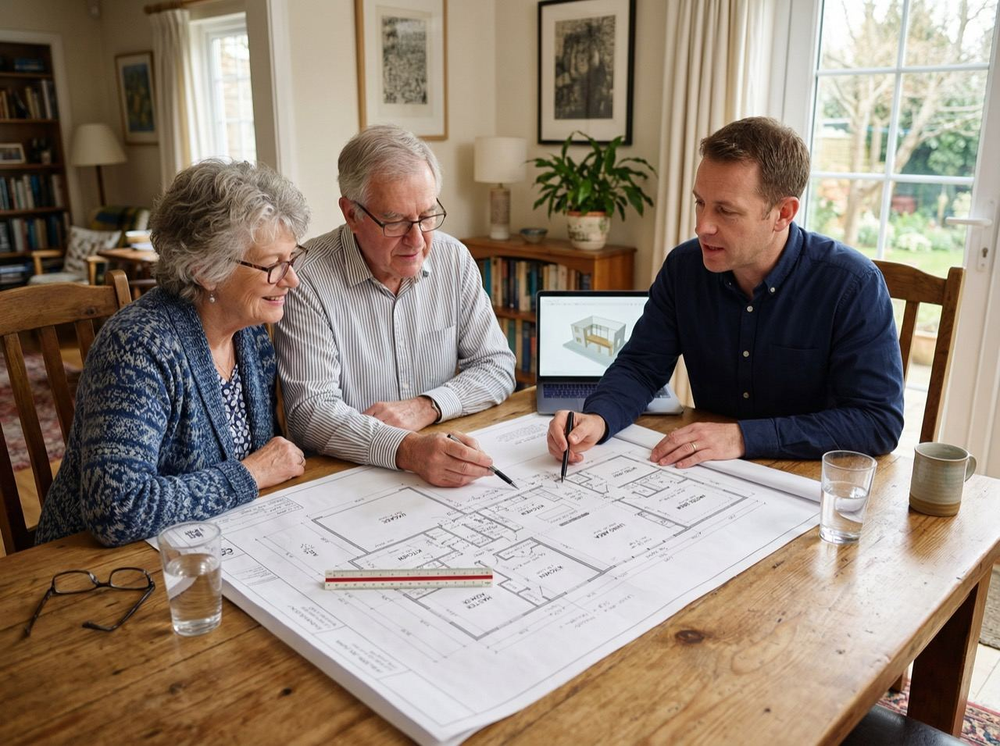

Serving Toronto homeowners 55+
Reverse mortgages for Toronto homeowners
Toronto's real estate has made a lot of longtime homeowners "house rich, cash poor", plenty of equity, not much monthly cash flow. If that sounds like you, a reverse mortgage might be worth an honest look.

Local knowledge
Toronto's neighbourhoods, and what they mean for a reverse mortgage
Toronto isn't one housing market, it's a dozen of them stitched together. I've worked with homeowners across the city, and each area brings its own quirks to the appraisal and lending process.
Downtown Toronto
A mix of condos and older heritage homes. Condo reserve funds and heritage designations both get extra attention during underwriting.
North York
Family-sized homes and bungalows, many owned for decades, often with substantial built-up equity.
Scarborough
Bungalows and detached homes across a wide range of values, with strong long-term homeowner communities.
Etobicoke
Everything from post-war bungalows to waterfront properties, which can carry unique appraisal considerations.
East York
Character homes on smaller, well-established lots.
York
Dense, urban family homes with strong resale demand.
Toronto specifics
Property tax relief, condos, and heritage homes
The City of Toronto runs its own property tax increase deferral and cancellation programs for eligible low-income seniors. These are separate from a reverse mortgage and worth checking directly with the city, since eligibility rules and amounts change and I don't administer them.
Toronto also has a high share of condo ownership and heritage-designated homes, both of which add a step to the process. Condo lenders review the building's reserve fund and any resale restrictions; heritage designation gets factored into the appraisal. Neither one rules out a reverse mortgage, but both deserve upfront attention rather than a surprise partway through.
I work with lenders experienced in Toronto's market conditions, so these details get handled early, not discovered late.
Toronto questions
Questions Toronto homeowners ask most
Does a reverse mortgage affect Toronto's property tax deferral program?
The two are separate programs and can sometimes work alongside each other, but a reverse mortgage is a private loan while the city's tax relief programs are administered by the City of Toronto with their own eligibility rules. Check current details with the city and mention both to your independent legal advisor before deciding.
Can Toronto condo owners get a reverse mortgage?
Often yes, though condos involve extra review, such as the building's reserve fund and any rules that affect resale. Lenders assess each condo individually, so I look into your specific building before we go further.
What about a heritage-designated home in Toronto?
A heritage designation does not prevent a reverse mortgage, but it can affect the appraisal and how a lender views future resale, so it's factored into underwriting on a case-by-case basis.
How much of my Toronto home's equity can I access?
It depends on your age, your home's appraised value, and current lender terms, so I won't estimate a number without those details. What I can tell you is the general range and walk you through real figures for your specific home during a free consultation. See how reverse mortgages work for the general picture, or take the self-assessment to see if it's worth exploring.
Let's talk about your Toronto home
A free, no obligation conversation, with someone who knows the neighbourhood you're in.